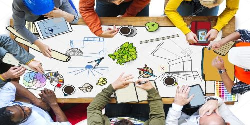
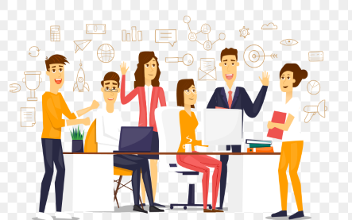
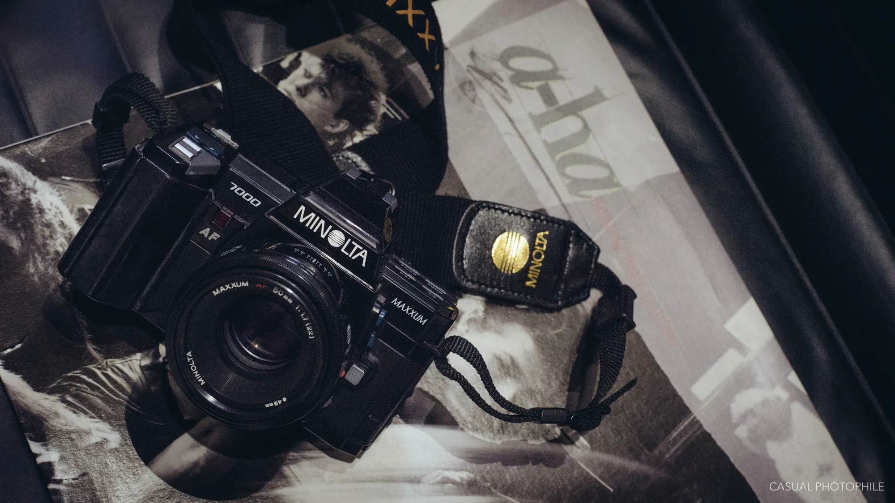

TECHNICAL TEAM
Technical team of GDSC-MVJCE manages the technical work of the club like making websites,
creating technical content. They also prepare technical study materials for sessions, workshops.

ANDROID DEVELOPMENT TEAM
Android Development Team of GDSC-MVJCE manages application development for any projects and technical assistance.

DESIGN TEAM
Design Team of GDSC-MVJCE designs the posters of events and social media.They even contribute themselves in making
promotional videos.

CONTENT AND SOCIAL MEDIA TEAM
Content and social media team of GDSC-MVJCE writes the content for posters and social media captions. They provide
the best possible content for the social media platforms about the organized events.

COMMUNITY AND MANAGEMENT TEAM
Community and Management team of GDSC-MVJCE engage with members and co-ordinates events and workshops. They understand the
needs of the members and come up with feedbacks to improve.

MEDIA TEAM
Media team of GDSC-MVJCE captures beautiful pictures of the events, workshops that are organized. They create memories,
and tell a story through a lens.